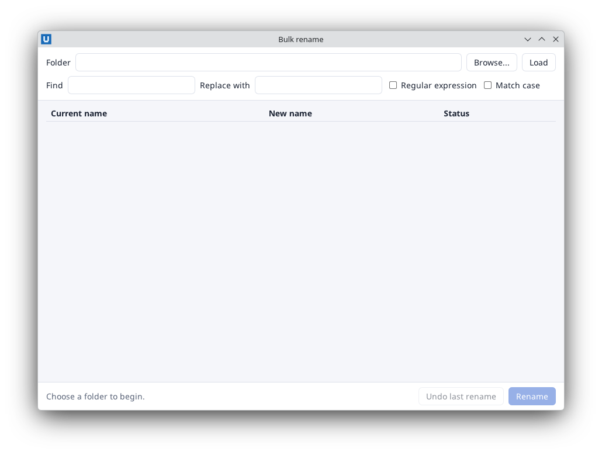

Tutorial: build a bulk file-rename tool with a live preview¶
In this tutorial you build a small admin tool with the NativeHTMLKit PowerShell SDK: pick a folder, type a find/replace rule (plain text or regular expression), see a live preview of the new names with conflicts flagged, confirm in a dialog, rename, and undo. It takes about 30 minutes.
You will learn the whole app lifecycle, loading HTML and CSS from files, live updates from input events, safe rendering of file names, a native folder picker with a fallback, an HTML confirmation dialog, error handling per file and an automated self-test.
The finished app is examples/bulk-rename: app.ps1, index.html
and style.css. Every app.ps1 excerpt below is copied from that file, which the repository's
test suite runs on Linux (PowerShell 7) and Windows (PowerShell 7 and Windows PowerShell 5.1).
You need PowerShell 7.2+ (Linux or Windows) or Windows PowerShell 5.1, a desktop session, and
the module: Install-Module NativeHTMLKit -Scope CurrentUser.
Step 1: create the project¶
New-NativeHTMLKitProject -Path ./BulkRename -Name 'Bulk rename' -AppId 'org.example.BulkRename'
pwsh -File ./BulkRename/app.ps1 # Windows PowerShell 5.1: powershell.exe -NoProfile -File .\BulkRename\app.ps1
A window with a greeting form opens. Close it. You now have app.ps1, index.html, style.css
and app.toml in BulkRename. Read script lifecycle if you want
to know why the script runs twice.
Step 2: the page¶
Replace index.html and style.css with the files from
examples/bulk-rename. The page has four parts, each addressed by
element ids that the script will use:
- a header with the folder box (
folder), Browse... (browse) and Load (load); - the rule form
rulewithfind,replaceand the checkboxesregexandcase; - the preview table body
preview; - a footer with the summary line
summary, Undo (undo) and Rename (apply), plus a<dialog id="confirm">withconfirm-text,confirm-noandconfirm-yes.
All behaviour lives in PowerShell; the page has no scripts. style.css uses
prefers-color-scheme, so the tool follows the desktop's light or dark mode.
Step 3: the skeleton¶
Replace app.ps1 with this skeleton. It loads the page from the script's folder; relative URLs in
index.html (the stylesheet) resolve against that folder.
param([string]$Folder, [switch]$SelfTest)
$ErrorActionPreference = 'Stop'
Import-Module NativeHTMLKit
$app = Start-NativeHTMLKitScript -Name 'Bulk rename'
try {
$window = New-NativeHTMLKitWindow -Application $app -Title 'Bulk rename' -Width 900 -Height 620 -MinWidth 640 -MinHeight 400
$doc = Open-NativeHTMLKitFile -Window $window -Path (Join-Path $PSScriptRoot 'index.html')
# Steps 5-8 add state, functions and event handlers here.
Set-NativeHTMLKitReady -Application $app
Wait-NativeHTMLKit -Application $app -UntilShutdown
} finally {
Close-NativeHTMLKit -Application $app
}
Run it: the window shows the empty tool. param() is declared above Start-NativeHTMLKitScript,
and the launcher passes your command-line arguments to the backend run, so
pwsh -File ./app.ps1 -Folder ~/Pictures will reach $Folder in step 5.
Step 4: plan the renames without any UI¶
Keep the logic that decides new names separate from the window. A pure function is easy to reason
about and to test. Add it above Start-NativeHTMLKitScript (defining a function there is not a
side effect, so running it twice is harmless):
function Get-RenamePlan {
# Returns one row per file: Old, New, Status (unchanged | rename | conflict | invalid | error), Note.
param([string[]]$Names, [string]$Find, [string]$Replace, [bool]$Regex, [bool]$MatchCase)
$options = [Text.RegularExpressions.RegexOptions]::None
if (-not $MatchCase) { $options = [Text.RegularExpressions.RegexOptions]::IgnoreCase }
$pattern = $Find
$replacement = $Replace
if (-not $Regex) {
$pattern = [regex]::Escape($Find)
$replacement = $Replace.Replace('$', '$$') # literal text, not $1 group references
}
$matcher = $null
$patternError = $null
if ($Find) {
try { $matcher = New-Object Text.RegularExpressions.Regex($pattern, $options) }
catch {
$reason = $_.Exception
if ($null -ne $reason.InnerException) { $reason = $reason.InnerException }
$patternError = 'Invalid pattern: ' + $reason.Message
}
}
$comparer = [StringComparer]::Ordinal
if ([Environment]::OSVersion.Platform -eq [PlatformID]::Win32NT) { $comparer = [StringComparer]::OrdinalIgnoreCase }
$existing = New-Object 'System.Collections.Generic.HashSet[string]' -ArgumentList @(, $comparer)
foreach ($name in $Names) { [void]$existing.Add($name) }
$claimed = New-Object 'System.Collections.Generic.HashSet[string]' -ArgumentList @(, $comparer)
$invalid = [IO.Path]::GetInvalidFileNameChars()
foreach ($name in $Names) {
$row = [pscustomobject]@{ Old = $name; New = $name; Status = 'unchanged'; Note = '' }
if ($patternError) { $row.Status = 'error'; $row.Note = $patternError }
elseif ($null -ne $matcher) {
$new = $matcher.Replace($name, $replacement)
$row.New = $new
if ($new -cne $name) {
if (-not $new -or $new.IndexOfAny($invalid) -ge 0 -or $new -eq '.' -or $new -eq '..') { $row.Status = 'invalid'; $row.Note = 'Not a valid file name' }
elseif (($existing.Contains($new) -and -not $comparer.Equals($new, $name)) -or -not $claimed.Add($new)) { $row.Status = 'conflict'; $row.Note = 'Name already used' }
else { $row.Status = 'rename' }
}
}
$row
}
}
It escapes the find text and the $ in the replacement in plain-text mode, reports an invalid
regular expression on every row instead of throwing, refuses names with characters the file
system does not allow, and flags a conflict when the new name already exists or two files would
get the same name (case-insensitively on Windows).
Try it in a console (paste the function first):
Get-RenamePlan -Names 'IMG_0001.jpg', 'IMG_0002.jpg', 'notes.txt' -Find 'IMG_' -Replace 'photo-' -Regex $false -MatchCase $false | Format-Table
Step 5: list files and preview live¶
Add the state and the functions that read the rule, render the preview, load a folder, rename and
undo, inside try below Open-NativeHTMLKitFile (the rename and undo functions are used in
steps 7 and 8):
$state = @{ Folder = $null; Names = @(); Plan = @(); Undo = @() }
function Read-Rule {
return @{
Find = Get-NativeHTMLKitValue -Document $doc -Element find
Replace = Get-NativeHTMLKitValue -Document $doc -Element replace
Regex = Get-NativeHTMLKitChecked -Document $doc -Element regex
MatchCase = Get-NativeHTMLKitChecked -Document $doc -Element case
}
}
function Update-Preview {
$rule = Read-Rule
$state.Plan = @(Get-RenamePlan -Names $state.Names -Find $rule.Find -Replace $rule.Replace -Regex $rule.Regex -MatchCase $rule.MatchCase)
$html = New-Object System.Text.StringBuilder
foreach ($row in $state.Plan) {
$status = $row.Status
if ($row.Note) { $status = $row.Note }
[void]$html.Append("<tr class=`"$($row.Status)`"><td>" + [Net.WebUtility]::HtmlEncode($row.Old) + '</td><td>' +
[Net.WebUtility]::HtmlEncode($row.New) + '</td><td>' + [Net.WebUtility]::HtmlEncode($status) + '</td></tr>')
}
Set-NativeHTMLKitDocumentHtml -Document $doc -Element preview -Html $html.ToString()
$count = @($state.Plan | Where-Object { $_.Status -eq 'rename' }).Count
$blocked = @($state.Plan | Where-Object { $_.Status -in 'conflict', 'invalid', 'error' }).Count
$summary = "$($state.Names.Count) file(s), $count to rename"
if ($blocked) { $summary += ", $blocked skipped" }
Set-NativeHTMLKitDocumentText -Document $doc -Element summary -Text $summary
Set-NativeHTMLKitDocumentText -Document $doc -Element apply -Text "Rename $count"
if ($count -gt 0) { Set-NativeHTMLKitDocumentAttribute -Document $doc -Element apply -Name disabled -Remove }
else { Set-NativeHTMLKitDocumentAttribute -Document $doc -Element apply -Name disabled }
}
function Update-FileList {
$state.Names = @(Get-ChildItem -LiteralPath $state.Folder -File | Sort-Object Name | ForEach-Object { $_.Name })
Update-Preview
}
function Open-Folder([string]$Path) {
if (-not $Path -or -not (Test-Path -LiteralPath $Path -PathType Container)) {
Set-NativeHTMLKitDocumentText -Document $doc -Element summary -Text 'That folder does not exist.'
return
}
$state.Folder = (Resolve-Path -LiteralPath $Path).ProviderPath
Set-NativeHTMLKitDocumentValue -Document $doc -Element folder -Value $state.Folder
Set-Undo @()
Update-FileList
}
function Set-Undo($Steps) {
$state.Undo = @($Steps)
if ($state.Undo.Count -gt 0) { Set-NativeHTMLKitDocumentAttribute -Document $doc -Element undo -Name disabled -Remove }
else { Set-NativeHTMLKitDocumentAttribute -Document $doc -Element undo -Name disabled }
}
function Invoke-Rename {
$done = New-Object System.Collections.ArrayList
$failed = 0
foreach ($row in @($state.Plan | Where-Object { $_.Status -eq 'rename' })) {
try {
Rename-Item -LiteralPath (Join-Path $state.Folder $row.Old) -NewName $row.New
[void]$done.Add(@{ From = $row.Old; To = $row.New })
} catch { $failed++ } # in use, permission denied, or changed since the preview
}
Set-Undo $done.ToArray()
Update-FileList
$message = "Renamed $($done.Count) file(s)."
if ($failed) { $message += " $failed failed (in use, permission denied or changed)." }
Set-NativeHTMLKitDocumentText -Document $doc -Element summary -Text $message
}
function Undo-Rename {
if ($state.Undo.Count -eq 0) { return }
$restored = 0
# Reverse order, so chains such as a->b, b->c are undone correctly.
foreach ($step in $state.Undo[($state.Undo.Count - 1)..0]) {
try { Rename-Item -LiteralPath (Join-Path $state.Folder $step.To) -NewName $step.From; $restored++ } catch { $null = $_ }
}
Set-Undo @()
Update-FileList
Set-NativeHTMLKitDocumentText -Document $doc -Element summary -Text "Restored $restored file name(s)."
}
Everything shown in the table is a file name, which is untrusted text, so each cell is encoded
with [Net.WebUtility]::HtmlEncode. The status class (rename, conflict, ...) comes from a
fixed set and styles the row. $state is a hashtable at script level: the functions and every
callback read and change the same object.
Now connect the events. input fires on every keystroke in the rule form (the handler sits on
the form and receives events from all its fields), change when a checkbox toggles, and submit
when the user presses Enter in a field:
# Live preview: every keystroke or checkbox change in the rule form.
$null = Register-NativeHTMLKitDocumentEvent -Document $doc -Type input -Element rule -Callback { Update-Preview }
$null = Register-NativeHTMLKitDocumentEvent -Document $doc -Type change -Element rule -Callback { Update-Preview }
# Enter in a rule field submits the form: treat it as "update preview", nothing else.
$null = Register-NativeHTMLKitDocumentEvent -Document $doc -Type submit -Element rule -Callback { Update-Preview }
$null = Register-NativeHTMLKitDocumentEvent -Document $doc -Type click -Element load -Callback { Open-Folder (Get-NativeHTMLKitValue -Document $doc -Element folder) }
Finally, open the folder passed on the command line, just before Set-NativeHTMLKitReady:
if ($Folder) { Open-Folder $Folder }
Run pwsh -File ./app.ps1 -Folder <a folder with some files>. Type IMG_ in Find and
photo- in Replace with: the preview updates while you type, and the summary counts the files
that would be renamed.
Step 6: choose the folder with the native dialog¶
Add the capability check after $state, so the Browse... button is disabled where the host
cannot show native dialogs (for example in headless test runs):
$caps = Get-NativeHTMLKitCapabilities -Application $app
if (-not $caps.file_dialogs) { Set-NativeHTMLKitDocumentAttribute -Document $doc -Element browse -Name disabled }
and the button's handler next to the other registrations:
$null = Register-NativeHTMLKitDocumentEvent -Document $doc -Type click -Element browse -Callback {
try { $picked = Show-NativeHTMLKitFileDialog -Window $window -Kind ChooseFolder -Title 'Folder with files to rename' }
catch [NativeHTMLKit.RpcException] { Set-NativeHTMLKitDocumentText -Document $doc -Element summary -Text $_.Exception.RpcMessage; return }
if (-not $picked.cancelled) { Open-Folder @($picked.paths)[0] }
}
Show-NativeHTMLKitFileDialog waits until the user decides while the window keeps handling
events; a cancelled dialog returns cancelled = $true. See file dialogs.
Step 7: confirm and rename¶
Renaming is destructive, so ask first in an HTML <dialog>. The Rename button fills the
dialog text and opens it modally; the dialog's buttons close it and decide. Escape closes the
dialog without a click, which counts as "no".
function Confirm-Rename([bool]$Yes) {
Show-NativeHTMLKitHtmlDialog -Document $doc -Element confirm -Close -ReturnValue ''
if ($Yes) { Invoke-Rename }
}
$null = Register-NativeHTMLKitDocumentEvent -Document $doc -Type click -Element apply -Callback {
$count = @($state.Plan | Where-Object { $_.Status -eq 'rename' }).Count
Set-NativeHTMLKitDocumentText -Document $doc -Element confirm-text -Text "Rename $count file(s) in $($state.Folder)?"
Show-NativeHTMLKitHtmlDialog -Document $doc -Element confirm
}
# Decide in the button handlers, not in the dialog's close event: a <dialog> keeps its
# previous return value when the user dismisses it with Escape.
$null = Register-NativeHTMLKitDocumentEvent -Document $doc -Type click -Element confirm-no -Callback { Confirm-Rename $false }
$null = Register-NativeHTMLKitDocumentEvent -Document $doc -Type click -Element confirm-yes -Callback { Confirm-Rename $true }
The decision is made in the button handlers rather than in the dialog's close event because a
<dialog> keeps its previous return value when it is dismissed with Escape (see
HTML dialogs).
Invoke-Rename (added in step 5) renames each planned file on its own: one locked file does not
stop the others, and the summary reports how many failed. Each success is recorded for undo.
Step 8: undo¶
Undo-Rename (also added in step 5) renames the recorded files back in reverse order. Connect
the Undo button:
$null = Register-NativeHTMLKitDocumentEvent -Document $doc -Type click -Element undo -Callback { Undo-Rename }
Your app now matches examples/bulk-rename/app.ps1 except for the self-test.

Real capture on KDE Plasma 6.6 Wayland with the released packages.
Step 9: test it without a screen¶
The finished example has a -SelfTest switch. It creates a temporary folder with sample files,
fills the rule form through the SDK (Set-NativeHTMLKitDocumentValue, Set-NativeHTMLKitChecked),
checks the preview summary and the conflict detection, opens the confirmation dialog and calls
Confirm-Rename $true (what the dialog's Rename button does), checks the files on disk,
undoes, and finally requests a quit:
$env:NATIVEHTMLKIT_TEST_MODE = '1' # the host runs without windows on screen
pwsh -File ./app.ps1 -SelfTest # prints: SELFTEST PASS bulk-rename
Headless mode has no mouse or keyboard input, so the self-test calls the same functions the handlers call. This catches mistakes in your logic and in the SDK calls; check the real clicks once in a desktop session.
Where next¶
- Ship it: project scaffolding explains
app.toml, app identity and distribution. - Make it faster on big folders: move
Get-ChildIteminto a background task. - Browse the other examples and the cmdlet reference.
Source: nativehtmlkit-powershell/docs/tutorials/bulk-rename.md · edit the page there.